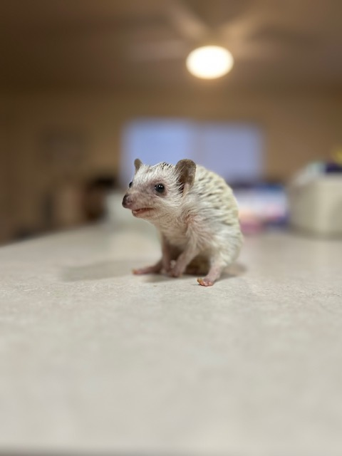

About Kaylee

My name is Kaylee DeCamps. I was born and raised in Idaho but lived everywhere in the Treasure Valley, which is the state captial to the Oregon border. I have six siblings and I am the oldest. Growing up I was able to travel a bit; when I was a kid we would go the Lagoon in Farmington, Utah. We would go there for dance competitions every summer. In high school I went to Puerto Rico for a dance trip, when I graduated high school I moved to Ketchikan, Alaska to work for the summer. After that I lived in Las Vegas, Nevada for two years working as a nanny. Since then I have been in Rexburg, Idaho, and met the love of my life. Luke and I have been married for a year. We are both in school and working full time. Marriage has been so amazing and hard, sometimes all at the same time. For only being married a year we have already had a life threatening experience. I suffered with migraines for a month and come to find out the cause of my migraines was a rare type of blood clotting in my brain. The blood clots were so bad I ended up having a small stroke the day I was diagnosed. I am still healing but feeling much better and getting stronger everyday. Now, Luke and I have a little baby girl named Knives! She is a 6 month old hedgehog who loves to sleep all, eat food, and is the sweetest cuddler. She is the best addition to our family and love this cute little sweety.
